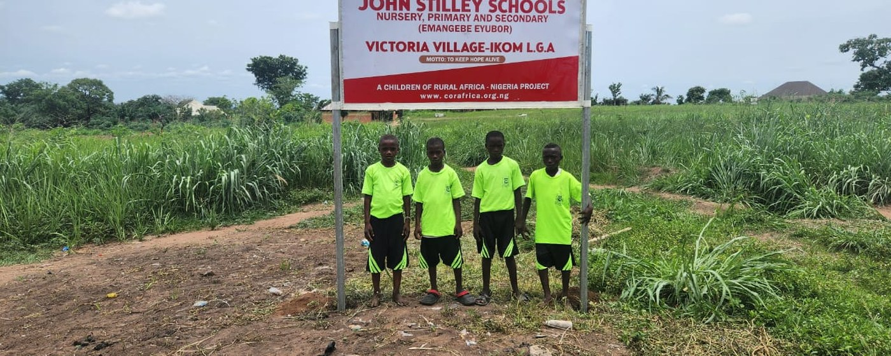

Land preparation and planting
Clearing and preparing the ground, then planting the season’s crop.


Agriculture on the timetable rather than in a textbook. Pupils work a real farm through a real season, and leave school with a skill that feeds a family.
What it is
The demonstration farm is an integrated approach to education: agriculture is built into the school curriculum so that students gain hands-on knowledge and experience of every part of it. Pupils and students take an active part at each stage.
Clearing and preparing the ground, then planting the season’s crop.
Keeping a crop alive through a season, which is where most of the learning is.
Bringing in what the school has grown.
Selling the produce — the part of farming that is usually never taught.
Keeping a harvest until it is worth something.
What is grown supports the school that grew it, and the skill outlasts the schooling.

Why it matters
The initiative is meant to make graduates self-reliant, and better equipped to face unemployment and the over-dependence on conventional white-collar work that follows it.
Through this hands-on approach, agriculture stops being a classroom subject and becomes a practical skill — one that promotes food security and self-reliance in the communities our schools serve. Our registered farming company, CORA Farms Nigeria Ltd, works the same ground on a commercial scale and trains rural farmers alongside the pupils.
Support the work
CORAfrica is a registered 501(c)(3) in the United States, so gifts from US donors are tax-deductible. Give monthly, and we can plan.